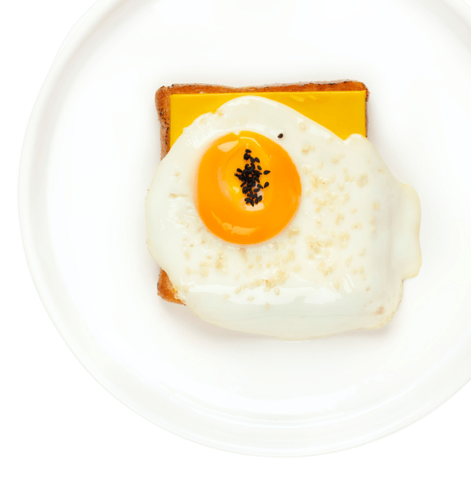
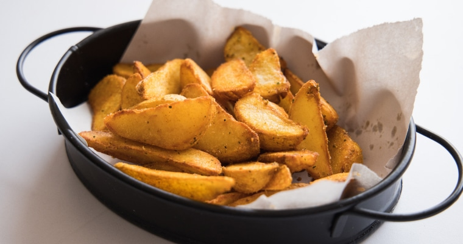
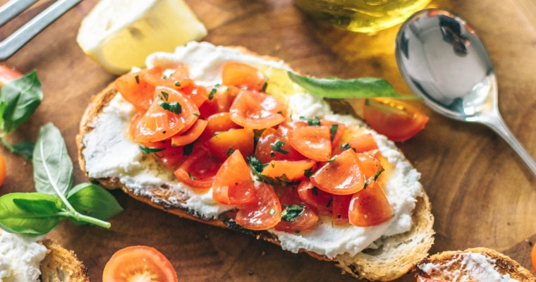
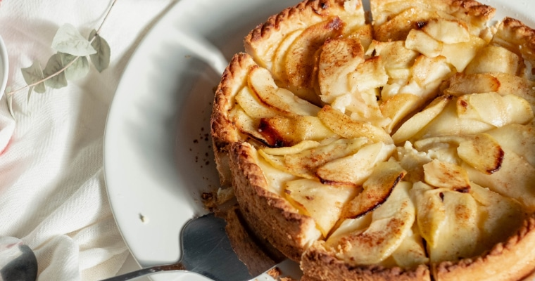

Самые вкусные, быстрые, простые
На нашем сайте собрано около 50 000 рецептов. И это не просто огромный массив кулинарных рецептур, а проверенные на домашних кухнях любимые блюда наших пользователей.
Популярные рецептыТост с яицом и сыром
(на завтрак)

Быстро
На сайте вы можете быстро найти вкусные рецепты
Просто
Все рецепты создаются обычными пользователями
Дешево
На рецепты не придется тратить много денег
Популярные рецепты
- 
Картофель Айдахо
Один из самых часто приготовляемых картофельных гарниров в мире
7 ингредиентов - 
Брускетта с помидорами
Вкусная итальянская закуска, простейший способ почувствовать легкую сытость
8 ингредиентов - 
Яблочный пирог
Пирог из терпких антоновских яблок с добавлением сметаны
10 ингредиентов